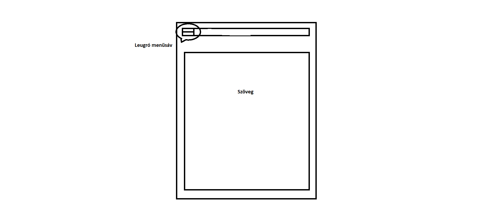

Az eredeti koncepció alapján kezdetem el dolgozni, amelynek egy részét elvetettem egy idő után. Ennek oka a tapasztalatom hiánya, illetve hogy maga a terv is bonyolultabb megvalósítást igényelt volna. A nehézségek közé tartozott az hogy néha véletlenül változtattam a kódon egy-egy karaktert ami teljesen összezavart mindent és jelentősen megváltoztatta a weboldal kinézetét. Volt olyan pillanat amikor a kapcsos zárójelekkel kavart valamit a program,emiatt pedig a teljes struktúra a feje tetejére állt.Végül pedig a responsive feature-el voltak kisebb-nagyobb problémaim,de végül sikerült azokat is megoldanom.
Öszzességében ez egy igazán élvezhető feladat volt és úgy is érzem hogy sokat tanultam belőle, ha pedig a jövőben szükségem lesz weboldalt kreálni akkor tudom honnét indulja ki.
Felhasznált irodalom:
https://www.w3schools.com/html/